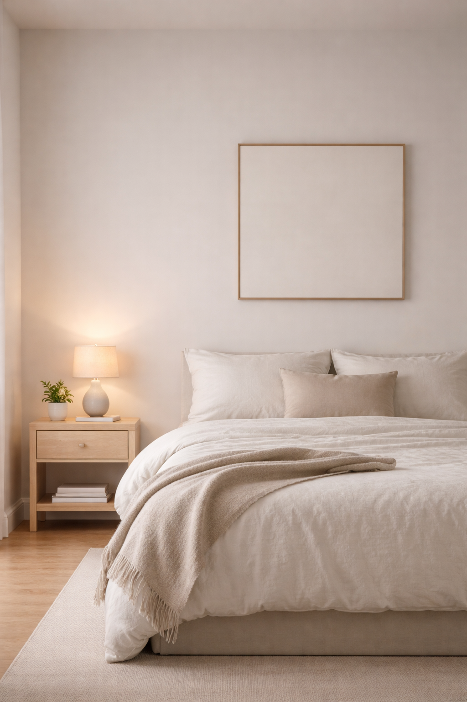
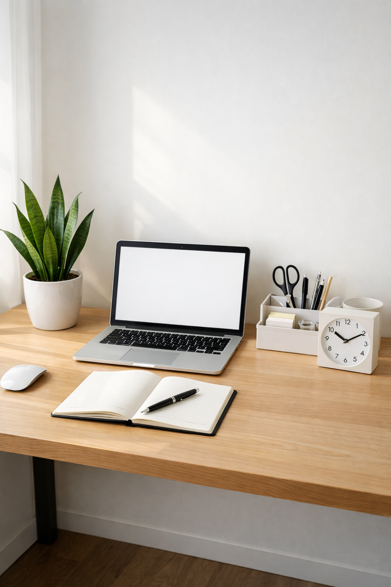

There's a moment that happens sometimes.
You walk into a room and something shifts. Your shoulders drop. Your breathing slows. The constant mental chatter quiets, just for a second.
It's not magic. It's space.
Real, actual space—not just physical emptiness, but the kind of breathing room that lets you think clearly, work calmly, and simply be without the weight of visual noise pressing in from every corner.
Most of us don't have enough of it.
Our homes are full of things we meant to use, gifts we felt obligated to keep, purchases that promised to solve problems but just created new ones. Our workspaces overflow with supplies, papers, and the accumulated debris of busy lives.
And we wonder why we're exhausted.
The spaces we live and work in aren't neutral. They're either giving us energy or taking it away. There's no in-between.
This guide will show you how to create breathing room in your home and office—not through dramatic overhauls, but through gentle, sustainable choices that compound into lasting calm. You'll discover practical ways to simplify each space, specific products that actually help (not add to clutter), and how minimalism naturally leads to more sustainable living.
Let's create spaces that support you instead of draining you.
Why Your Space Matters More Than You Think
The belief that productivity and peace come from willpower—from trying harder, organizing better, managing time more efficiently—is a common one.
Yet a subtle reality often intrudes. Imagine a day starting with motivation and focus, only to walk into a cluttered office or overstuffed bedroom and feel energy drain away. The mess isn't dramatic. It's subtle. A drawer that won't close properly. Piles of "I'll deal with this later." Surfaces covered with things without homes.
Each item seems to require a small decision: Move me. Organize me. Decide what to do with me.
The result? By day's end, there's exhaustion—and the real work hasn't even begun.
The Silent Communication of Your Environment
Your environment is constantly communicating with you. Clean, open surfaces say you have space to think. Clutter says you have unfinished business. Beautiful, intentional objects say you deserve nice things. Cheap, unused purchases say you're never satisfied.
Creating spaces that breathe isn't about deprivation. It's about clearing away everything that doesn't serve you so you can finally see—and appreciate—what does.
Transforming Your Living Spaces
Your Living Room: Where You Actually Live
Walk into your living room and notice how you feel. Really notice.
Does the space welcome you? Or does it feel like a storage unit with furniture?
Most living rooms accumulate things gradually—throw pillows that seemed cute at the store, decorative objects that never quite fit, furniture that fills space without serving purpose.
Start here: Choose one surface—the coffee table or a bookshelf. Clear it completely. Wipe it down. Feel that moment of calm when you see clean, empty space.
Now add back only what genuinely belongs: perhaps one beautiful object, a plant that's actually thriving, a few books you're currently reading.
A simple bamboo serving tray keeps the items you need organized without creating visual chaos.
If your living room feels lifeless, consider adding one low-maintenance plant. Plants like Snake Plants or Pothos transform a room quietly—they clean the air while requiring almost no attention from you.
For seating that actually supports rest, invest in organic cotton throw pillows. Quality pieces you'll use for years beat cheap furniture you'll replace constantly—better for your space, budget, and the planet.
If you need storage that doesn't create visual clutter, natural woven storage baskets or a storage ottoman with a clean design can hide remotes, blankets, and the small items that tend to accumulate while keeping surfaces clear.
Your Bedroom: Designing for Deep Rest
Your bedroom should be the most restful place in your home. Is it?
Look around. Can you see the top of your nightstand? Are your drawers easily closed? Does your closet stress you out every morning?
The gentle truth: You don't need as many clothes as you own. You wear the same favorites over and over while the rest just takes up space and creates decision fatigue.
Instead of a massive closet purge, try this: for one month, hang everything backward. When you wear something, hang it the right way. At the end of the month, you'll clearly see what you actually use. The rest isn't serving you.
For better sleep environment:
If light disrupts your rest, blackout curtains made from natural linen make a measurable difference in sleep quality.
Replace harsh overhead lighting with a bedside lamp with adjustable warm light. Lighting affects mood and sleep preparation more than most people realize.
If your nightstand is cluttered, a minimalist catchall organizer can hold just what you need—phone, book, water glass—without the chaos.
For bedding that supports sustainable living, a linen duvet cover breathes better, lasts longer, and feels better against your skin.
Your Kitchen: Simplified Sustenance
Kitchens collect things faster than any other room. Gadgets you used once. Duplicate utensils. Plastic containers with missing lids. Expired pantry items.
None of it is making your life easier.
Start small: Clear one drawer. Just one. Remove duplicates, discard broken items, donate what you don't use. Feel that satisfaction of reclaiming space.
Sustainable Swaps That Reduce Clutter
Replace paper napkins with reusable linen napkins. One quality set eliminates the constant repurchasing cycle.
Ditch plastic storage for glass food storage containers. Glass containers stack neatly, don't stain or smell, and last for years.
If counter clutter stresses you, keep only daily-use items visible and store the rest. A countertop organizer in natural wood can corral what stays out while maintaining clean lines.
For sustainable food wrapping, reusable silicone lids replace disposable plastic wrap. One purchase eliminates ongoing waste and cabinet clutter.
Keep a stainless steel water bottle at your desk to end the accumulation of disposable bottles and reduce daily waste.
Reimagining Your Workspace
Your Desk: Command Center for Calm
If you work from home, your desk environment matters more than almost anything else. A cluttered desk creates a cluttered mind—not motivational wisdom, but neuroscience. Visual chaos competes for your attention, making focus harder and exhaustion come faster.
Our complete guide on transforming energy-draining workspaces covers this in depth, but here are the essentials:
Most of us keep far too much within arm's reach "just in case." But when everything is accessible, nothing is special. And your workspace becomes one more thing demanding attention instead of supporting your work.
Try the weekend test: This weekend, clear your entire desk. Everything off. Monday morning, add back only what you use that day. Tuesday, same thing. By Friday, you'll know exactly what earns a place on your desk surface. Everything else? Drawer, shelf, or donation box.
Essential workspace improvements:
A bamboo desk organizer set keeps the few items you need organized without creating visual noise.
Cable chaos creates subconscious stress. An under-desk cable organizer takes 15 minutes to install but creates lasting visual peace.
If your workspace feels lifeless, add one thriving plant. A Snake Plant in a modern ceramic pot or a desk-sized Pothos does triple duty: cleans your air, adds life to your space, and requires almost zero maintenance.
For physical comfort during long work hours, proper support matters. Memory foam back support can transform an adequate chair into one that actually supports focus. If you're ready to invest in seating, a sustainable desk chair with lumbar support pays for itself in reduced pain and increased productivity.
Keep only pens that write beautifully. Quality gel pens make daily tasks more pleasant.
If papers stress you, a bamboo document holder creates a system: handle immediately, file in one spot, or recycle. No piles.
Your Digital Environment
Physical clutter is obvious. Digital clutter is insidious.
Thirty-seven browser tabs. Email subscriptions you never read. Apps you haven't opened in months. Photos you'll never look at again. All of it creates the same mental drain as physical clutter.
This week, do one digital task:
Close all your browser tabs. Yes, all of them. If something was truly important, you'll remember and reopen it.
Next week, unsubscribe from ten email lists. Not someday—ten specific lists, right now.
For password chaos, consolidate everything into a password manager. This eliminates scattered sticky notes and daily frustration.
Small acts. Real relief.
The Practice of Letting Go
Why It's Hard
Letting go is emotional work disguised as organizational work.
That sweater you never wear? It represents the person you thought you'd be when you bought it. That kitchen gadget still in the box? It symbolizes good intentions and wasted money. Those books on your shelf? They're proof you're smart, cultured, well-read—even if you'll never open them again.
We hold onto things because they represent something: past selves, future hopes, obligations, guilt, relationships, identity.
Letting go means accepting reality. You're not that person. You won't read those books. The relationship ended. The hobby didn't stick.
It's okay.
Permission to Release
What often helps is a simple recognition: every item released can create space for something truly needed. Not a new purchase—just space itself.
Space to breathe. Space to think. Space to notice what is genuinely loved, instead of being surrounded by visual noise.
While no one needs external permission to let things go, it is sometimes offered anyway: it's okay to release things that don't serve you anymore, even if they're perfectly good, even if they were expensive, even if someone you love gave them to you.
It isn't a rejection of the person or the gesture. It is simply an act of honesty about what fits your life right now.
Small Shifts, Profound Changes
The Power of Starting Small
You don't have to transform your entire home this weekend. In fact, please don't try. Massive overhauls create chaos, exhaustion, and often fail because they're unsustainable.
Instead, start with one thing:
- One drawer organized
- One shelf cleared
- One category of items reduced
- One surface cleaned and kept clear for a week
That's enough. The goal isn't perfection. It's practice.
Creating Sustainable Rituals
Intentional living isn't a one-time purge. It's an ongoing practice. Small rituals help make it sustainable:
Evening reset: Spend two minutes returning your living room to calm. Not scrubbing or reorganizing—just putting things back in their homes.
Sunday refresh: Take five minutes to clear one surface completely.
Monthly release: Let go of five items. Not someday. Five specific things, released this month.
These tiny acts compound. Six months from now, your space will feel fundamentally different—not because of one big change, but because of dozens of small, consistent choices.
Where Minimalism Meets Sustainability
Quality Over Quantity
As you simplify, you'll naturally gravitate toward fewer, better things. It's not about spending more money—it's about being more thoughtful.
One excellent chair you'll use for years beats replacing cheap ones every few years. Better for your budget, your space, and the planet.
Natural materials last longer than plastic. Bamboo kitchen utensils are investments that improve with age. Well-made items can be repaired. Quality pieces feel better to use, look better in your space, and create less waste.
This shift—from cheap and frequent to quality and rare—is where minimalism and sustainability meet naturally.
The Ripple Effect
What often surprises many about simplifying is how it changes the approach to shopping.
It can lead to becoming slower to purchase. More questioning. More willing to wait and see if something is actually needed.
This shift doesn't come from forced discipline, but from understanding the real cost of things—not just the price, but the energy required to maintain, organize, and eventually discard them.
Every item brought into a home creates work. Physical work (cleaning, storing). Mental work (remembering, deciding). Environmental work (resources to produce, waste when discarded).
When that reality is internalized, shopping stops being mere entertainment or therapy. It becomes a conscious decision about what truly deserves space in a life.
What Intentional Living Actually Looks Like
Intentional living doesn't look the same for everyone.
It's not bare white walls and furniture with no personality. It's not getting rid of everything except what you can fit in a backpack. It's not deprivation or punishment or performance.
For some people, it means a full bookshelf of beloved titles they'll reread forever. For others, it means library cards and clear surfaces.
There's no single right way.
The Only Question That Matters
Does your space support the life you actually want to live?
If you want calm, does your environment create calm? If you want creativity, does your space inspire it? If you want connection, does your home welcome people in?
Your space should be working for you. If it's not, it's time to reconsider what's staying and what can go.
Your Action Plan: Start This Week
You don't need more information. You don't need a perfect plan or permission from anyone. You just need to start. Small. Gentle. Today.
This week:
- Day 1: Pick one surface that stresses you out. Clear it. Keep it clear for one week. Notice how it feels.
- Day 2: Remove five items from your home. Not someday—five things today. Donate, recycle, or discard.
- Day 3: Unsubscribe from five email lists.
- Day 4: Close all browser tabs. Start fresh tomorrow.
- Day 5: Clear one drawer completely. Organize what stays with a drawer organizer set.
- Day 6: Identify one sustainable swap you can make this month (cloth napkins, reusable bags, glass storage).
- Day 7: Rest. Notice the changes. Appreciate the breathing room you've created.
That's all. Seven small actions. Real results.
Building Your Resources
Need More Guidance?
- Struggling with workspace energy? Read our complete guide on transforming energy-draining workspaces
- Want to improve air quality naturally? Discover which desk plants boost focus
- Looking for sustainable products? Browse our curated eco-friendly essentials
Creating Your Intentional Life
This journey looks different for everyone.
Maybe you'll start by simplifying your workspace so you can finally focus without distraction.
Maybe you'll add some green life to your environment and discover how much difference one thriving plant makes.
Maybe you'll spend the next year slowly, gently letting go of things that no longer serve you—creating space for what actually matters.
However you begin, know this: you're not alone. Creating intentional spaces isn't about achieving perfection. It's about practicing honesty, making conscious choices, and trusting that less can genuinely be more.
Start small. Start today. Start with what feels right for you.
Want gentle inspiration delivered without overwhelm? Subscribe to our newsletter for weekly tips on sustainable living, minimalist home design, and honest product recommendations that actually help—not add to clutter.
A note on our recommendations: When we share product suggestions, we only recommend items we genuinely believe will help you create a more intentional, sustainable home or workspace. We may earn a small commission if you purchase through our links, which helps us continue creating helpful content like this. Your trust matters more to us than any commission.